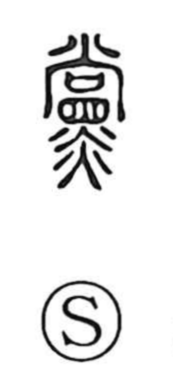

党

Uncategorized
Kun: tomogara, nakama, yakara | On: tou
party ・ faction ・ companions ・ clan
Explanation
Originally written 黨, this is a phono-semantic character with 尚 as the sound element—the same phonetic that appears in 當 (tō) and 堂 (dō). In ancient imagery, 尚 suggests the faint manifestation of a divine sign at a window prepared to welcome and worship the gods, while 黑 evokes the soot-blackened color of the cooking stove. Together they picture inviting the deities at the window above the hearth, and by extension the people who cook, eat, and celebrate together: companions sharing one stove. From this sense of fellows of a single hearth arose meanings such as one’s kin or clan (yakara), and later a territorial or political grouping—a party or faction.